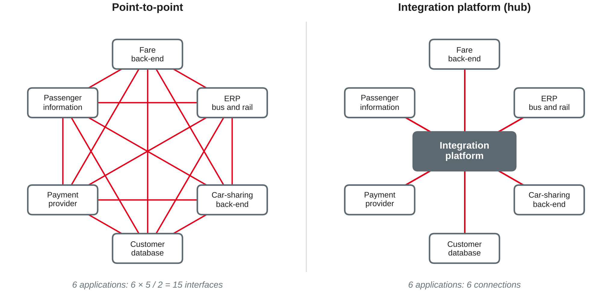
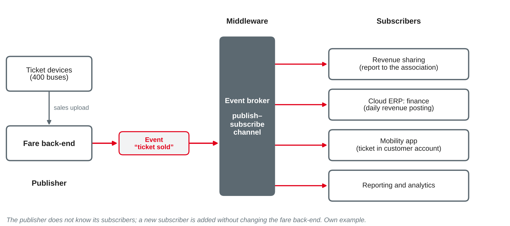

IT Management and EAM
Integrated information processing · integration styles and patterns · point-to-point vs. middleware · ESB, APIs, event-driven integration and iPaaS
DHBW · Digital Business Management (Business IT) · Semester 4
You were asked to follow one business process of your training company and find out which applications exchange data along it — and how.
Why applications must work together
Islands of applications
Integrated information processing
Example: a passenger cancels a subscription in the app — the customer account, the ERP subscription module, the fare back-end and the payment provider must all know it.
Own wording based on Mertens (2013).
| Dimension | Forms | Example at Rhein-Neckar Mobil Group |
|---|---|---|
| Object | Data, functions, processes, methods, programs | Customer data shared; "check fare" called by the app |
| Direction | Horizontal (along the value chain), vertical (operations → planning and control) | Ticket sale → revenue sharing; sales → management reporting |
| Reach | Within an area, across functions and processes, enterprise-wide, between companies | Bus and rail only; group-wide account; partner offers |
| Degree of automation | Full or partial automation | Revenue posting automatic; complaint routed to a person |
| Timing | Batch or real time | Nightly file vs. live seat availability |
Own wording based on Mertens (2013, section 1.1).
Enterprise Application Integration (EAI) connects the applications of an enterprise — and of its partners — through a planned integration architecture and middleware, so that they share data and functions without re-entry and without each pair needing its own interface.
Own wording based on Ebert et al. (2017), Hohpe and Woolf (2004) and Ross et al. (2006).
| Style | How it works | Example | Watch out |
|---|---|---|---|
| File transfer | One application writes a file, another reads it | Nightly CSV from fare back-end to ERP | Late data, format changes break it |
| Shared database | Applications read and write the same database | Ticket devices and back-end on one database | Tight coupling, one schema for all |
| Remote procedure invocation | One application calls a function of another and waits | App asks the fare back-end for a price | Both must be up at the same time |
| Messaging | Applications exchange messages via a messaging system | Sales sent as messages to revenue sharing | Middleware needed, harder to test |
Own wording based on Hohpe and Woolf (2004).
No style is best in general — the criteria are weighed per integration need.
Own wording based on Hohpe and Woolf (2004).
From point-to-point to middleware

Own illustration based on Hohpe and Woolf (2004); own example.
| Aspect | Point-to-point | Middleware (hub, bus, platform) |
|---|---|---|
| Start | Quick and cheap for the first interfaces | Investment in platform, skills and operation |
| Growth | Up to n(n−1)/2 interfaces | About one connection per application |
| Change | Replacing an application touches all its interfaces | Change the connection to the platform |
| Transparency | Interfaces hidden in applications | Interfaces visible, monitored in one place |
| Risk | Many small failure points | Central component: must be highly available |
Point-to-point is fine for a few, stable interfaces; middleware pays off when the number of applications and changes grows.
Own compilation based on Hohpe and Woolf (2004), Chappell (2004) and Ebert et al. (2017).
Patterns give integration problems a common vocabulary:
| Pattern | Problem it solves |
|---|---|
| Point-to-point channel | A message must be processed by exactly one receiver |
| Publish-subscribe channel | An event must reach every interested receiver |
| Message translator | Sender and receiver use different data formats |
| Content-based router | The receiver depends on the content, e.g. unit or region |
| Idempotent receiver | A message may arrive twice and must not be booked twice |
| Dead letter channel | Messages that cannot be delivered must not get lost |
Own wording based on Hohpe and Woolf (2004).
Trade-off: fewer translations — but agreeing on one "customer" for all units takes governance and time.
Own wording based on Hohpe and Woolf (2004).
Rhein-Neckar Mobil Group wants to connect eight applications for the mobility app: customer database, fare back-end, car-sharing back-end, payment platform, passenger information, helpdesk SaaS, and the APIs of the e-bike partner and the parking garages.
ESB, APIs, events and iPaaS
What it is
Experience from practice
Own wording based on Chappell (2004) and Hohpe and Woolf (2004).
API first (principle from session 13): new applications offer their functions via the API platform, so the next app or partner can reuse them.
Own wording based on Fielding (2000) and Hohpe and Woolf (2004).

Own illustration based on Hohpe and Woolf (2004); own example.
| Synchronous (request–reply, API call) | Asynchronous (messaging, events) | |
|---|---|---|
| Caller | Waits for the answer | Continues after sending |
| Availability | Both sides must be up | Receiver can be down for a while |
| Coupling | Tighter: caller knows the receiver | Looser: sender may not know receivers |
| Good for | Queries, checks, decisions while a user waits | Notifications, data distribution, high volumes |
| Example | App asks for the price of a trip | Ticket devices send sales after a network gap |
Most landscapes need both: APIs for questions, events for facts.
Own wording based on Hohpe and Woolf (2004).
Questions to ask: data location and protection, lock-in to the provider, cost per connection or message volume, who governs integrations built outside IT.
Own wording based on Ebert et al. (2017); questions: own compilation.
| Approach | Best for | Watch out |
|---|---|---|
| Point-to-point | Few, stable interfaces | Growth, hidden dependencies |
| ESB / integration broker | Many internal applications, central governance | Bottleneck, logic in the bus |
| APIs | Apps, partners, reuse of functions, request–reply | Availability chains, versioning |
| Events | Facts for many receivers, near real time, loose coupling | Eventual consistency, monitoring |
| iPaaS | Many SaaS, hybrid landscapes, speed | Lock-in, data location, governance |
An integration architecture combines approaches and defines which one is used for what.
Own compilation based on Hohpe and Woolf (2004), Chappell (2004) and Ebert et al. (2017).
Own wording based on Hanschke (2023, section 5.5.5) and Hohpe and Woolf (2004).
Own wording based on Hohpe and Woolf (2004) and Chappell (2004).
Recommend an approach (point-to-point, ESB/broker, API, events, iPaaS) and give one reason:
Case: Rhein-Neckar Mobil Group (sessions 3–13): 3,200 employees, €410 million turnover, about 180 applications. The mobility app is planned for 2028: one account, journey planning, bus and rail tickets, car sharing, partner offers, one payment.
Preparation: find out which IT services your training company buys from outside — e.g. SaaS, hosting, application support — and ask why it decided to buy rather than to do them itself.
Diagrams in this deck are own illustrations. Integration patterns and frameworks are described in own words.